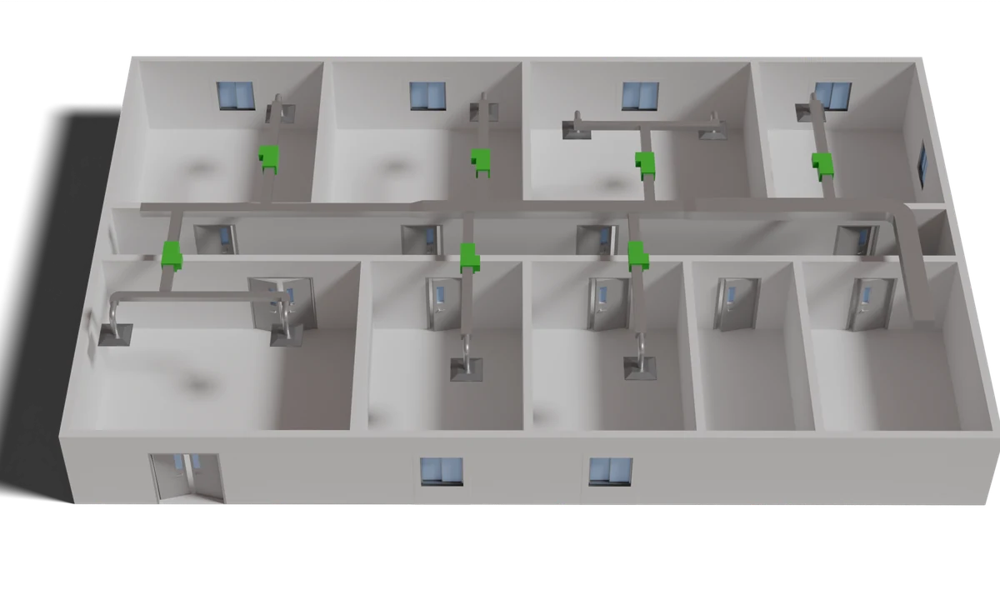

SketchUp extensionIn use
DuctBuilder
A SketchUp Ruby extension that turns traced centerlines into finished 2D or 3D walls and HVAC ductwork, with doors, windows, diffusers and VAV boxes placed in one click. A complex floor plan with HVAC now takes under 20 minutes instead of more than a week, so one person does the work of five.
- Tools
- Ruby, SketchUp API, JSON component library
- Scope
- 16+ commercial and institutional buildings